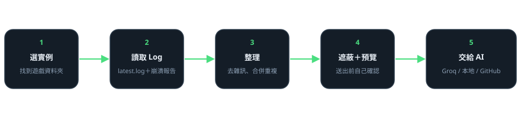

3AI 管道可選
14,000預設字元上限
3支援 vanilla / Forge / Fabric 標頭
0額外函式庫（僅 Qt Widgets + Network）
運作流程

為什麼用它
🧹
先整理再送
丟掉 DEBUG 與已知雜訊，重複訊息合併成 (×N)，長堆疊自動折疊，省 token 也讓 AI 抓得到重點。
🔒
預設保護隱私
使用者目錄、accessToken、玩家名、UUID、IP:Port 都會遮蔽，送出前可預覽整份內容。
🧠
三條 AI 路線
雲端 Groq、完全離線的本機 llama.cpp，或透過官方 Copilot CLI 使用 GitHub Copilot。
📄
不只看 latest.log
同時萃取最新 crash-reports 與 hs_err_pid 原生崩潰報告，含主堆疊與嫌疑 Mod。